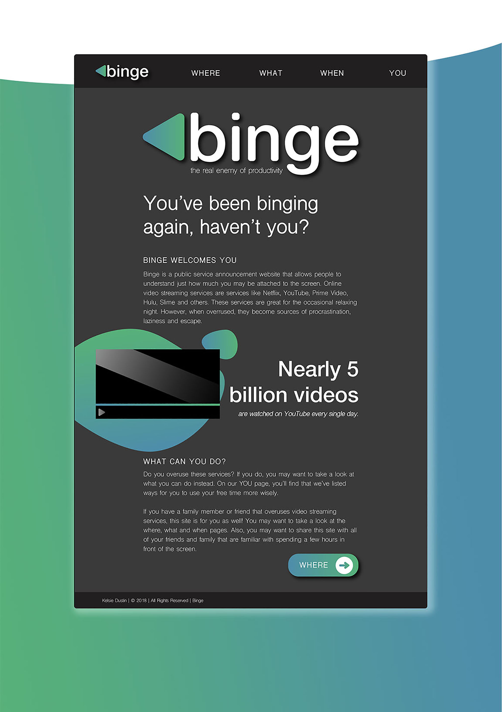
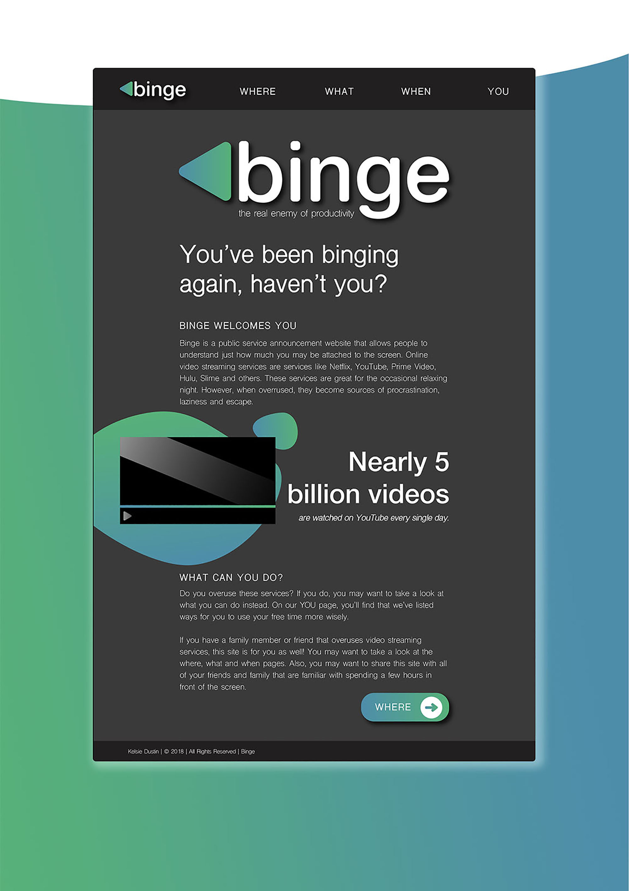

Binge: The Real Enemy of Productivity Prototype
Binge is a microsite prototype design that publicly enforces the abuse of online video streaming services like Netlix, YouTube, Hulu, and Amazon Prime Video. The site acts as a public service announcement for those who often binge watch on these services. This project was introduced as an information design project. The XD prototype can be found here.
 

Originally, the home button of the navigation header was in the center, reading simply "binge". After user-testing I realized many people were confused as to which direction they should go and which page they should look at next. After realizing this, I moved the home button to the left and placed everything else from left to right in the ideal order.
Learning about my target audience for this project was vital. The majority of the "streamers" were within ages 12-26. I wanted the design and feel of the site to appeal to that audience the most. I purposely incorporated a trendy feel made to mimic the platform of the streaming services themselves. The design, combined with the research and dynamic display, proved to be a major interest to the final group of users.